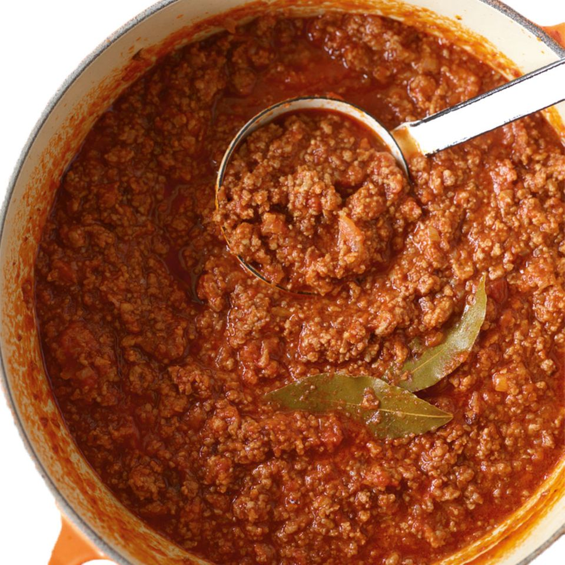

<!DOCTYPE html>
<html lang="en">
    <head>
        <meta charset="utf-8">
        <meta name="viewport" content="width=device-width, initial-scale=1.0">
    </head>
</html>
<body>
    <h1>Bolognese</h1>
    
    <h2>Traditional italian Bolognese</h2>
    <p>Easy to prepare in the morning and have the perfect sauce for your selfmade pasta!</p>
    <p>Tastes like an italian chef made it by himself!</p>
    <h2>Ingredients</h2>
    <ul>
        <li>Ground meat</li>
        <li>Smashed Tomatos</li>
        <li>Olive Oil</li>
        <li>Basil</li>
        <li>Salt</li>
        <li>Onions</li>
        <li>Red wine</li>
    </ul>
    <h2>Steps</h2>
    <ol>
        <li>Chop the onions into small pieces</li>
        <li>Roast the onions until they get light-brown</li>
        <li>Add the wine to chill the onions</li>
        <li>Add the ground meat and stir occassionally unil light-brown</li>
        <li>Add the smashed tomatos</li>
        <li>Add the spices and let the sauce cook for a minimum of 2 hours</li>
    </ol>
</body>